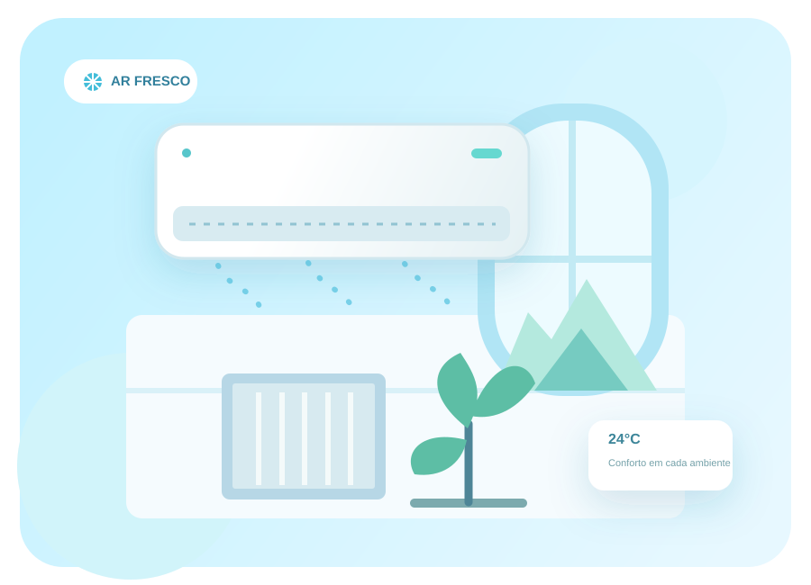

Instalação de splits
Instalação organizada e orientação para o melhor desempenho do equipamento.
Saiba mais →Instalação, limpeza e manutenção de ar-condicionado com atendimento pensado para sua casa ou empresa. Um ar mais confortável começa com o serviço certo.

Encontre o serviço mais adequado e converse com quem pode ajudar.
Instalação organizada e orientação para o melhor desempenho do equipamento.
Saiba mais →Cuidado com filtros e componentes para um ambiente mais agradável.
Saiba mais →Revisões periódicas para ajudar a evitar paradas inesperadas.
Saiba mais →Avaliação de ruídos, vazamentos, falhas de funcionamento e baixa eficiência.
Saiba mais →Um site que explica serviços e regiões de atendimento reduz dúvidas e facilita o primeiro contato. Esse é o objetivo do modelo de climatização.
Conte o que precisa e informe sua região.
Alinhe detalhes importantes do serviço.
Agendamento ou orçamento, conforme a necessidade.
Estas perguntas mostram como um cliente poderia conhecer o serviço antes de entrar em contato.
Instalação, limpeza, higienização, manutenção preventiva e corretiva são exemplos de serviços que podem entrar no site.
Sim. Bairros, cidades e áreas atendidas podem ser personalizados conforme a operação real da empresa.
Sim. Na versão final, a mensagem pode ser configurada para o número comercial da empresa.
Este formulário é apenas uma demonstração. Ao continuar, você falará com a CoreFix Tech sobre a criação de um site — não com uma empresa de assistência técnica real.
← Voltar aos outros modelos